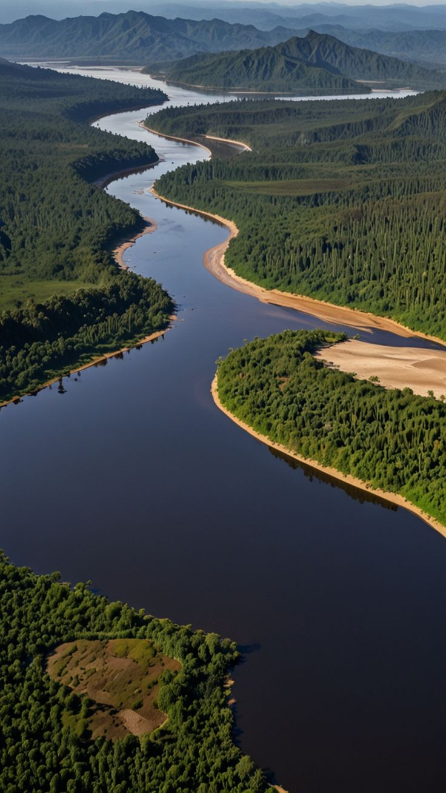

Mata Ciliar
Preservando recursos naturais
saiba mais
Porque preservar
Como preservar
Preservando recursos naturais
saiba mais

A Mata Ciliar é importante pois atua como uma barreira contra poluentes, evita assoreamento, e serve também como corredor ecológico para a Fauna
 Estratégias de reflorestamento
Estratégias de reflorestamento
O reflorestamento ajuda a restaurar habitats, aumenta a biodiversidade e estabiliza o solo, contribuindo para ecossistemas mais saudáveis e água mais limpa.
A agricultura sustentável promove práticas que reduzem a poluição, conservam os recursos e aumentam a resiliência dos nossos ambientes naturais.
O monitoramento da qualidade da água garante ecossistemas seguros, possibilitando medidas proativas para proteger a vida aquática e a saúde humana da poluição.

entre em contato41 99586 1511
41 99970 6561
manuela nadolny n29
felipe doerl n08